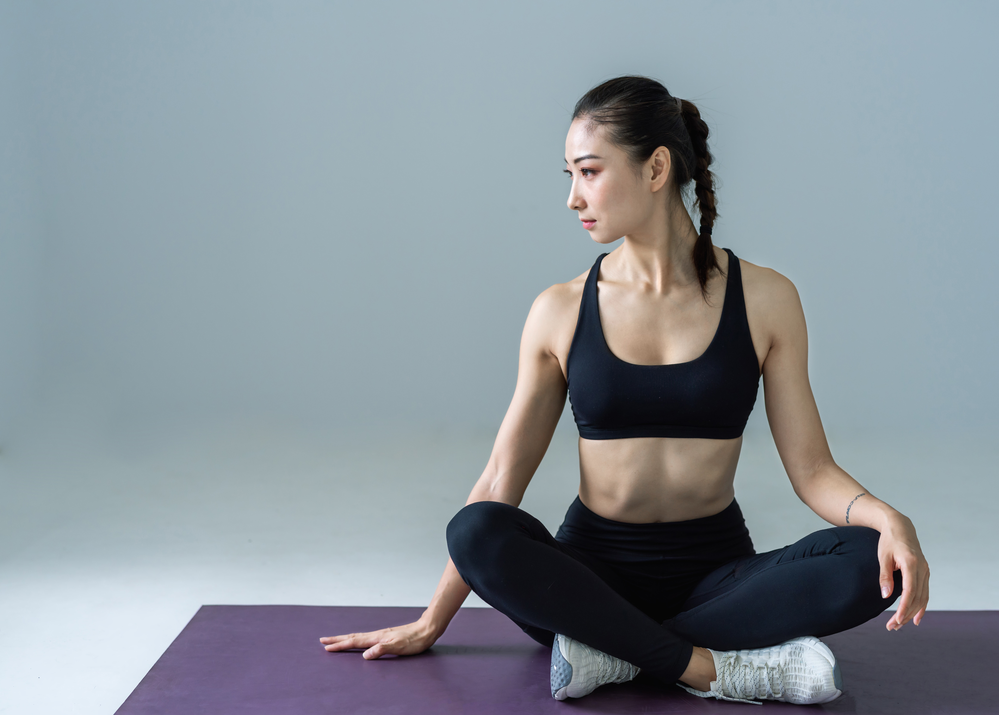

Yoga is an ancient system from India. This system includes asanas (postures) that help you to become healthier, balanced and can create the opportunity to enter deep states of meditation. The yogic system helps you become flexible, release tension, and burn toxins so that you can experience peace, calmness, relaxation, and clarity.

“Purnam” in Sanskrit means perfection. With a blend of intensive breathing techniques and yoga postures, Acharya Shree Yogeesh developed the Purnam System, which helps cleanse your body of toxins and negativities and immediately brings clarity, a sense of lightness, reduced tension and the ability to meditate deeply. This is a new and unique system not taught elsewhere.
Yoga is amazing—even if you only practice for one hour a week, you will experience the benefits of the practice. If you can do more than that, you will certainly experience more benefits.